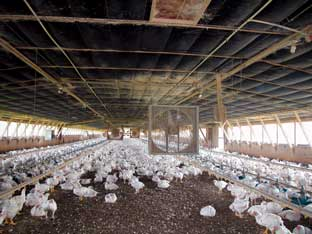
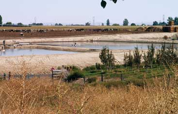
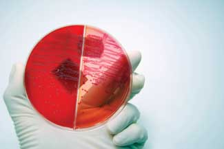
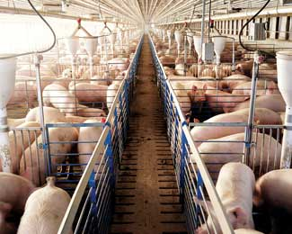
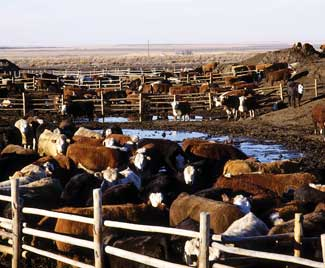
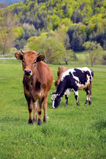

You may be familiar with many of the problems associated with concentrated animal feeding operations, or CAFOs. These “factory farm” operations are often criticized for the smell and water pollution caused by all that concentrated manure; the unnatural, grain-heavy diets the animals consume; and the stressful, unhealthy conditions in which the animals live. You may not be aware, however, of the threat such facilities hold for you and your family’s health - even if you never buy any of the meat produced in this manner.
Factory farms are breeding grounds for virulent disease, which can then spread to the wider community via many routes - not just in food, but also in water, the air, and the bodies of farmers, farm workers and their families. Once those microbes become widespread in the environment, it’s very difficult to get rid of them.
A 2008 report from the Pew Commission on Industrial Farm Animal Production, a joint project of the Pew Charitable Trusts and the Johns Hopkins Bloomberg School of Public Health, underscores those risks. The 111-page report, two years in the making, outlines the public health, environmental, animal welfare and rural livelihood consequences of what they call “industrial farm animal production.” Its conclusions couldn’t be clearer. Factory farm production is intensifying worldwide, and rates of new infectious diseases are rising. Of particular concern is the rapid rise of antibiotic-resistant microbes, an inevitable consequence of the widespread use of antibiotics as feed additives in industrial livestock operations.
Scientists, medical personnel and public health officials have been sounding the alarm on these issues for some time. The World Health Organization and the Food and Agriculture Organization (FAO) have recommended restrictions on agricultural uses of antibiotics; the American Public Health Association (APHA) proposed a moratorium on CAFOs back in 2003. All told, more than 350 professional organizations - including the APHA, American Medical Association, the Infectious Diseases Society of America, and the American Academy of Pediatrics - have called for greater regulation of antibiotic use in livestock. The Infectious Diseases Society of America has declared antibiotic-resistant infections an epidemic in the United States. The FAO recently warned that global industrial meat production poses a serious threat to human health.
The situation is akin to that surrounding global climate change four or five years ago: near-universal scientific consensus matched by government inaction and media inattention. Although the specter of pandemic flu - in which a virulent strain of the influenza virus recombines with a highly contagious strain to create a bug rivaling that responsible for the 1918 flu pandemic, thought to have killed as many as 50 million people - is the most dire scenario, antibiotic resistance is a clear and present danger, already killing thousands of people in the United States each year.
From one perspective, picking up bugs from our domesticated animals is nothing new. Approximately two-thirds of the 1,400 known human pathogens are thought to have originated in animals: Scientists think tuberculosis and the common cold probably came to us from cattle; pertussis from pigs or sheep; leprosy from water buffalo; influenza from ducks.
Most of these ailments probably appeared relatively early in the 10,000-year-old history of animal domestication. Over time, some human populations developed immunity to these diseases; others were eventually controlled with vaccines.
Some continued to kill humans until the mid-20th century discovery of penicillin, a miracle drug that rendered formerly life-threatening infections relatively harmless. Other antibiotics followed, until by the 1960s leading researchers and public health officials were declaring that the war on infectious diseases had been won.
Beginning in the mid 1970s, however, the numbers of deaths from infectious diseases in the United States started to go back up. Some were from old nemeses, such as tuberculosis, newly resistant to standard antibiotic treatments; others were wholly novel.
“In recent decades,” writes Dr. Michael Greger, director of public health and animal agriculture for the Humane Society of the United States and author of Bird Flu: A Virus of Our Own Hatching, “previously unknown diseases have surfaced at a pace unheard of in the recorded annals of medicine: more than 30 newly identified human pathogens in 30 years, most of them newly discovered zoonotic viruses.” (Zoonotic viruses are those that can be passed from animals to humans.)
Why is this happening? There are many reasons, including the increased pace of international travel and human incursions into wild animals’ habitats. But one factor stands out: the rise of industrial farm animal production. “Factory farms represent the most significant change in the lives of animals in 10,000 years,” Greger writes. “This is not how animals were supposed to live.”
Chicken and pig production are particularly bad. In 1965, the total U.S. hog population numbered 53 million, spread over more than 1 million pig farms in the United States - most of them small family operations. Today, we have 65 million hogs on just 65,640 farms nationwide. Many of these “farms” - 2,538, to be exact - have upwards of 5,000 hogs on the premises at any given time. Broiler chicken production rose from 366 million in 1945 to 8,400 million in 2001, most of them in facilities housing tens of thousands of birds.
On a global scale, the situation is even worse. Fifty-five billion chickens are now reared each year worldwide. The global pig inventory is approaching 1 billion, an estimated half of which are raised in confinement. In China and Malaysia, it’s not unheard of for hog facilities to house 20,000 or even 50,000 animals.
“Concentrated animal feeding operations are comparable to poorly run hospitals, where everyone is given antibiotics, patients lie in unchanged beds, hygiene is nonexistent, infections and re-infections are rife, waste is thrown out the window, and visitors enter and leave at will,” write Johns Hopkins researchers Ellen Silbergeld, Jay Graham and Lance Price in the 2008 Annual Review of Public Health. By concentrating large numbers of animals together, factory farms are terrific incubators for disease. The stress of factory farm conditions weakens animals’ immune systems; ammonia from accumulated waste burns lungs and makes them more susceptible to infection; the lack of sunlight and fresh air - as well as the genetic uniformity of industrial farm animal populations - facilitates the spread of pathogens.
The addition of steady doses of antibiotics to this picture tips the balance from appalling to catastrophic. Poultry producers discovered by accident in the 1940s that feeding tetracycline fermentation byproducts accelerated chickens’ growth. Since then, the use of antibiotics as feed additives has become standard practice across much of the industry. The Union of Concerned Scientists estimates that non-therapeutic animal agriculture use (drugs given to animals even when they are not sick) accounts for 70 percent of total antibiotic consumption in the United States.
The medical community has been cautioning for years against irresponsible antibiotic use among people, but in terms of sheer numbers, livestock use is far more significant. It’s a simple scientific fact that the more antibiotics are used - especially prolonged use at low doses as in factory farms - the more antibiotic-resistant microbes will become. Bacteria and viruses are also notoriously promiscuous, swapping genes across species and even across genera, creating what the Johns Hopkins researchers call “reservoirs of resistance.” “In some pathogens, selection for resistance also results in increased virulence,” they note. In other cases, otherwise harmless microbes can transfer resistance genes to pathogenic species.
There also are indications that factory farm conditions make animals more likely to excrete pathogenic microbes - suggesting another mechanism by which conversion to more humane farming methods would offer greater protection for human health.
Most so-called bio-containment procedures for confinement livestock operations are more concerned with protecting the crowded animals from disease outbreaks than from preventing human pathogens from escaping into the wider environment. As the report from the Pew Commission points out, every step in the industrial farm animal production system holds the potential for disease transmission, from transportation and manure handling, to meat processing and animal rendering.
The increasingly globalized nature of the farm animal production system means that live animals, as well as fresh and frozen meat, are constantly crossing international borders, ensuring that diseases present in one location will soon spread elsewhere. But the biggest transmission route is waste: Confined livestock operations in the United States produce three times as much waste each year as our country’s entire human population - and yet all that manure is much more loosely regulated and handled than human waste. Antibiotic-resistant microbes, as well as the antibiotics themselves, are now widely present as environmental contaminants, with unknown consequences for everything from soil microorganisms to people. Canada’s largest waterborne disease outbreak, which infected 1,346 people and killed six, was traced to runoff from livestock farms into a town’s water supply. The U.S. Geological Survey found antimicrobial residues in 48 percent of 139 streams tested nationwide from 1999 to 2000. Other studies have detected resistant bacteria in the air up to 30 meters upwind and 150 meters downwind of industrial hog facilities.
A wealth of evidence links industrial meat and poultry directly with foodborne illness. When dioxin-contaminated chicken feed led to the removal from the market of all chicken and eggs in Belgium for several weeks in June of 1999, doctors there noted a 40 percent decline in the number of human Campylobacter infections. Repeated studies have concluded that as much as 80 percent of retail supermarket chicken in the United States is contaminated with Campylobacter. Similarly, the Centers for Disease Control and Prevention estimates that Salmonella-contaminated eggs caused 180,000 cases of sickness in the United States in 2000. E. coli O157:H7 is blamed for 73,000 illnesses in this country each year, including about 2,000 hospitalizations and 60 deaths.
Although thorough cooking and careful handling can minimize your risks, antibiotic resistance raises the stakes when someone gets ill: “One in two human cases of Campylobacter, and one in five cases of Salmonella are now antibiotic-resistant,” says Steve Roach, public health program director for the Food Animal Concerns Trust and a member of the executive committee for the Keep Antibiotics Working coalition. “And when you have antibiotic resistance, you have more complications, more blood infections, more mortality.”
In fact, public health experts are beginning to suspect that a whole host of infections not previously thought of as food-related may ultimately be linked to the overuse of antibiotics in animal agriculture. Researchers at the University of California-Berkeley, for example, traced a multi-state outbreak of urinary tract infections among women in 1999 and 2000 to contamination with a single strain of drug-resistant E. coli found in cows. Dr. Lee Riley, lead author of a paper on the findings published in Clinical Infectious Diseases, cautioned that the findings indicated that “the problem of foodborne disease is much greater in scope than we had ever previously thought.”
And then there’s methicillin-resistant Staphylococcus aureus, or MRSA. Previously confined largely to hospitals, MRSA is now killing more people in the United States each year than HIV/AIDS. A series of recent studies in Europe have demonstrated a strong causal link between MRSA and intensive pig farming in the Netherlands, Germany and France. Little or no data are available on MRSA in animals in the United States, but the bacterium is widely present on pig farms in Canada, which sells millions of live pigs to the United States annually, so it seems pretty likely it’s in U.S. pig factories, too.
All in all, the CDC reports that 2 million people in the United States now contract an infection each year while in the hospital. Of those, a staggering 90,000 die - a toll higher than that from diabetes. Numbers such as that are prompting some medical investigators to suggest that we may be entering a “post-antibiotic era,” one in which (as a paper published in Environmental Health Perspectives in 2007 put it) “there would be no effective antibiotics available for treating many life-threatening infections in humans.”
Connections such as these aren’t always easy to prove, however, especially for drugs that have already been in widespread use for decades, which is one reason why regulations to reign in the non-therapeutic use of antimicrobials have so far been largely lacking in the United States. The pending approval of an antibiotic called cefquinome to treat respiratory diseases in cattle offered a recent test case. Cefquinome is similar to cefepime, a last-resort antibiotic used to treat serious infections in people. (Both are fourth-generation cephalosporins, one of the small number of new antibiotics developed in recent years.) The FDA’s Veterinary Medicine Advisory Committee, along with the Centers for Disease Control and Prevention and the American Medical Association, recommended against approval, warning that using cefquinome for animals would almost certainly render cefepime less effective for humans. But the FDA has apparently caved to industry pressure, claiming it lacks the authority to deny the drug companies’ request.
Fortunately, there is a better way. No one wants high-quality food to be unaffordable, but increasingly it appears that as a human species we need to strike a better balance between cheap food and safe food. Sweden and Denmark have led the way over the past two decades in the development of commercial farming methods that minimize antibiotic use. Alternative management strategies include improving animals’ diets, changing weaning practices for pigs, cleaning facilities thoroughly in between groups and being more careful about mixing animals coming from different locations.
Scandinavian producers weren’t necessarily happy when their countries’ ban on non-therapeutic uses of antibiotics was put in place, but they’ve come to realize that they can still run profitable operations without them. Researchers in this country have shown that the same is true here: In 2006, a team at Johns Hopkins used data from poultry giant Perdue to show that the small advantage in weight gain associated with non-therapeutic antibiotic use was canceled out by the cost of the drugs. Organic farmers in many parts of the world have also shown that livestock can be raised profitably and humanely without the use of antibiotics.
“This is not a necessary problem,” says Lance Price, scientific advisor for Johns Hopkins’ Center for a Livable Future. “If you look at all the stakeholders in this equation - you and me, the doctors and hospitals, the producers - everyone but the drug companies can entertain alternatives. The only group that stands to lose from a more responsible use of antibiotics is the drug companies.”
A bill introduced in Congress in 2007, the Preservation of Antibiotics for Medical Treatment Act, was one attempt to address these issues. Sponsored by Rep. Louise Slaughter, D-N.Y., the only microbiologist in Congress, and Senate Health Committee Chairman Edward Kennedy, D-Mass., the bill would have withdrawn approvals for feed-additive use of seven classes of antibiotics of value to human medicine and required producers of agricultural antibiotics to provide data to public health officials on the usage of the drugs they sell.
The costs associated with continuing industrial farm animal production are enormous. If it’s allowed to continue, industrial production as currently practiced could eventually eliminate a lot of other farming options (in addition to making a lot of us sick). As one Midwestern organic farmer explained to me, it’s simply not possible to raise pigs organically if you live too close to a confinement facility: The pathogen pressure is too intense. “Iowa has become a sink for pig diseases,” he said. They’re just in the air, and you can’t avoid them.
Campylobacter: This is the most common cause of foodborne diarrheal illness in the United States, causing an estimated 2 million cases each year. Most don’t require medical treatment, but a small number (approximately 50 per year) end in death. Chicken and turkey are the usual sources: Studies have shown that most conventional chicken is contaminated when it leaves the processing plant. Rising numbers of Campylobacter infections resistant to a class of antibiotics called fluoroquinolones led the FDA, in 2000, to seek to ban fluoroquinolone use in U.S. poultry production. The ban was held up in court by drug maker Bayer, but was finally put in place in 2005.
MRSA: Staphylococcus aureus is a bacteria widely present in our environment and usually harmless, but in susceptible individuals it can cause life-threatening infections. Methicillin-resistant Staphylococcus aureus, or MRSA (pronounced “mir-sah”), used to be primarily a problem in hospitals, but these days, cases of MRSA are increasingly likely to be “community-acquired,” and evidence suggests that factory farms are a source. MRSA can be spread by human or animal carriers with no signs of illness; a recent study found that nearly half of Dutch pig farmers, and 39 percent of pigs in Dutch slaughterhouses, were carriers of MRSA.
Salmonella: This is another bacteria causing frequent and sometimes serious foodborne illness, with an estimated 1.4 million U.S. cases each year, including 18,000 hospitalizations and 600 deaths. Salmonella can contaminate beef, poultry, eggs and even vegetables. Antibiotic-resistant Salmonella is on the rise: One strain, known as DT104, is resistant to five major antibiotics used in humans.
E. coli O157:H7: Most Escherichia coli bacteria are harmless, but a few strains, including the notorious O157:H7, can be deadly. Ground beef is the most common contaminated food source for people, but as the spinach scare of 2006 showed, other foods can also be affected. The toxic strains are linked to conditions in beef feedlots.
Enterococcus: Enterococci are a widespread group of intestinal bacteria that can cause serious infections in other parts of the body. Antibiotic resistance is a major concern with Enterococcus faecium, the strain most commonly associated with illness in people. In Europe, vancomycin-resistant Enterococcus (VRE) is a widespread environmental contaminant, where its emergence has been linked to agricultural use of avoparcin, an antibiotic closely related to vancomycin. In the United States, VRE is more often found in hospitals, and doctors are running out of treatment options: About 4 percent of VRE patients no longer respond to the antibiotic Synercid, a last-defense drug which is unfortunately related to virginiamycin, widely used in U.S. animal agriculture.
Reduce the amount of meat in your diet. Industrial farm animal production is driven by rising global demand for meat. Healthy protein alternatives include whole grains, beans, nuts and dairy products. Think of meat more as a seasoning (as in soups and stews), not an essential, three-meals-a-day main course.
When you do eat meat, buy from local farmers practicing humane, sustainable methods. Seek out meat and dairy products labeled as “raised without antibiotics,” and tell your local market manager you’d like to see more such products on store shelves.
Contact your Congressional delegation and ask them to support legislation to limit antibiotics in livestock feed, such as the Preservation of Antibiotics for Medical Treatment Act, introduced to Congress in 2007.
|
ISTOCKPHOTO/STEPHANIE PHILLIPS Current methods of raising livestock are encouraging the development of new antibiotic-resistant strains of bacteria, including salmonella. |
 FACTORYFARM.ORG The unsanitary and stressful conditions in many industrial livestock operations are breeding new diseases faster than ever before. Even in relatively clean conditions, the large number of animals crowded together can help spread disease. |
 FACTORYFARM.ORG Lagoons used to collect the manure from the feedlot. Concentrated animal feeding operations create severe pollution because they cannot recycle the huge amounts of manure they produce. |
|
 ISTOCKPHOTO/LINDE STEWART A culture of E. coli, one disease-causing microbe whose virulence is linked to conditions on cattle feedlots. |
 DANIEL PEPPER/GETTY Methicillin-resistant Staphylococcus aureus, aka MRSA, has been linked to intensive pig farming. |
 GRANT HEILMAN Industrial farm animal production is driven by rising global demand for meat. |
|
 ISTOCKPHOTO/ELENA ASENOVA Consumer demand can change how meat is produced. Seek out meat from local farmers practicing humane, sustainable methods. |
|
|